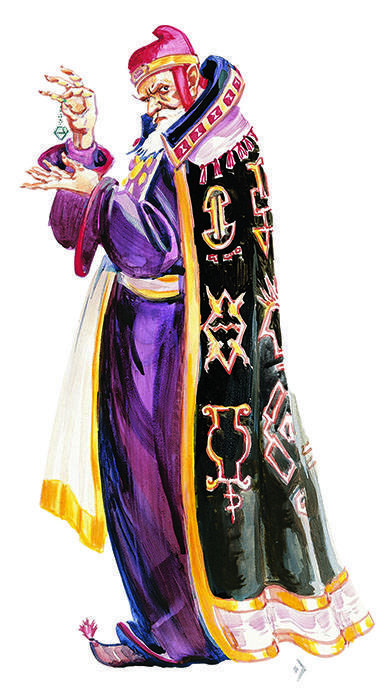

幻术师

幻术师（Illusionist）
|
所需属性值： |
智力
9 |
|
|
敏捷
16 |
|
首要属性： |
智力 |
|
可选种族： |
人类，侏儒 |
幻术师是专精法师的范例。这里关于幻术师的描述可被用于指导创造其他学派的专精法师。
首先，幻术学派是个要求很高的学派。要专精幻术学派，法师需要不低于16的敏捷。
智力达到16或更高的幻术师会获得10%的额外经验奖励。
因为幻术师比一般的法师更了解幻术，所以他在对抗幻术时的豁免检定获得+1奖励，其他人在对抗他施展的幻术时所进行的豁免检定承受-1惩罚（这些调整仅适用于允许进行豁免检定的法术）。
在他的研修过程中，幻术师变得善于记忆幻术（尽管这个过程仍是极为艰难的）。他在每个法术等级都可以记忆一个额外的幻术。因此，一个1级施法者可以记忆两个法术，但其中必须至少有一个是幻术。
此后，当他开始为他自己的收藏研究新法术时，他会发现设计满足专精所需的新的幻术是非常简单的，但研究其它学派的法术则越来越耗费时间了。
最后，对幻术魔法全身心投入的研究使得角色无法掌握其他那些与幻术学派完全不同的学派（方阵中与幻术相对的那些）。这就意味着，幻术师无法学习属于死灵、祈唤/塑能或防护学派的法术。
举个例子：有15点智力属性的幻术师约恩维利。他在旅行过程中夺取了敌对法师的法术书，书中有进阶隐形法术、恒久之光法术和火球术，这三个法术都不在约恩维利的法术书中。他有80%概率习得进阶隐形法术。而恒久之光法术是个转化法术，所以约恩维利只有50%几率习得这个法术（参看表格4来了解这些数据如何得出）。约恩维利无法习得火球术，他甚至连抄进自己的法术书也做不到，因为这是个塑能法术。